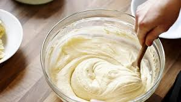
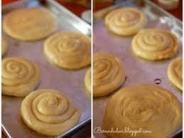
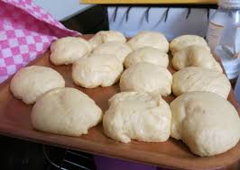

Langkah-langkah
- Campur semua bahan roti jadi satu

- Uleni sampai kalik(aku pake tangan) jangan takut jika adonan lengket ya, burari tangan sesekali dengan tepung (tapi jangan menambahkan tepung) uleni terus sampai adonan kalik

- kalinya adonan caroni tidak sekalik adonan rotiya, kira kira seperti ini sudah cukup

|